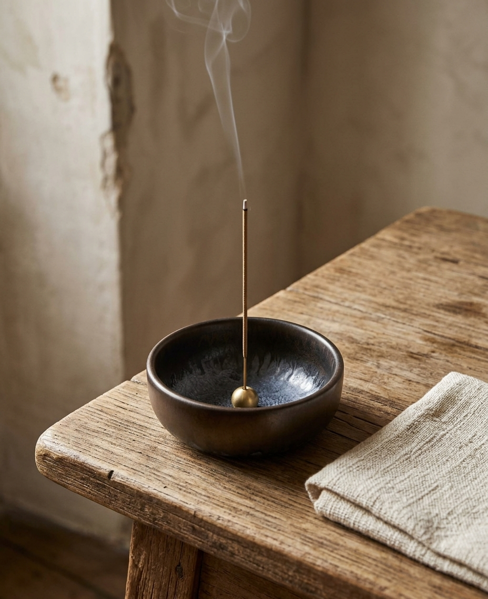

Handmade-style ceramic incense holder from Japan — a simple, elegant catch for ash and smoke, made for daily use.

Mino ware is one of Japan's most established ceramic traditions — this bowl brings that same quality to a daily incense ritual.
The deep bowl shape keeps ash contained, so you can enjoy the ritual without worrying about your table or shelf.
The metallic, uneven glaze finish means no two bowls look quite the same — a small, imperfect beauty by design.
A good incense holder disappears into the moment — it should hold the stick steady, catch the ash, and look calm sitting on a nightstand or entryway table between uses.
This 3.9 inch bowl comes with a brass incense stand insert, so it works with standard incense sticks right out of the box.
A calming addition to a wind-down routine before sleep.
A quiet, welcoming scent as soon as you walk in.
Pairs naturally with a zen garden kit or reading nook.
Yes — the brass stand insert fits standard-diameter incense sticks.
It's a fired ceramic glaze meant for everyday use — just avoid dropping it like any ceramic piece.
Ash wipes out easily with a soft cloth or brush between uses.
A handcrafted-style Mino ware ceramic incense holder — see current pricing and availability on Amazon.
Check Price on Amazon →